About The Team
Team 7178, otherwise known as the Yetis, is Walled Lake Robotics's younger team.
The Yetis split off from the Monsters in 2018 and have been thriving ever since.
The team consists of many individual sub teams that are student driven and mentor advised.
Our team consists of people of many different experience levels, meaning anyone can join and be a
part of the team.
7178 fosters a learning environment where the more experienced teach the inexperienced everything
they need to be successful in order to keep the team the best it can be.
Involvement in the community
Along with the competitions, 7178 is also involved in the community at both Walled Lake Central and Walled Lake Western.
We bring our beloved Tank Bot, a tank robot to shoot t-shirts at football games, pep assemblies, and other important
events that go on. We also bring our robots to walk in the Walled Lake memorial day parade.
Awards
|
|
|
| 2023 |
2023 |
Creativity Award ~ Milford
|
Third Place ~ Marian Tournament
Second Place ~ Seaholm Tournament
|
| 2022 |
2022 |
|
Excellence in Engineering Award ~ Walled Lake District Event
Finalist ~ Walled Lake District Event
2022 Winner Ford Field ~ FIM District, State Championship
|
Third Place ~ Marian Tournament
Beautiful Bot Award ~ Marian Tournament
Second Place ~ Walled Lake Western Tournament
Spirit of the Competition Award ~ Walled Lake Western Tournament
Strategic Design Award ~ County Championship
Finalist ~ County Championship
|
| 2021 |
2021 |
|
|
Technical Excellence Award ~ County Championship
|
| 2020 |
2020 |
|
|
Most Improved Award ~ Virtual Design Challenge
|
| 2019 |
2019 |
|
|
Semi-Finalist ~ County Championship
Judges Award ~ Birmingham Tournament
|
| 2018 |
2018 |
|
Highest Rookie Seed Award ~ Troy District Event
|
Technical Excellence Award ~ Brother Rice/Marian Tournament
Second Place ~ Brother Rice/Marian Tournament
Third Place ~ Birmingham Tournament
|
 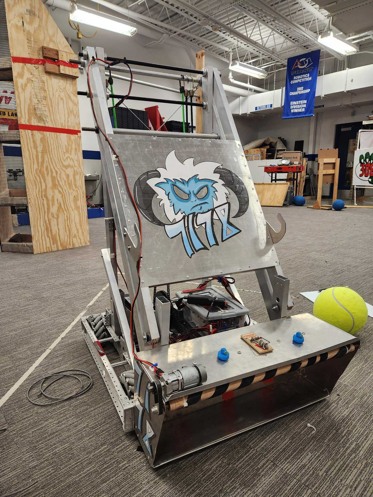
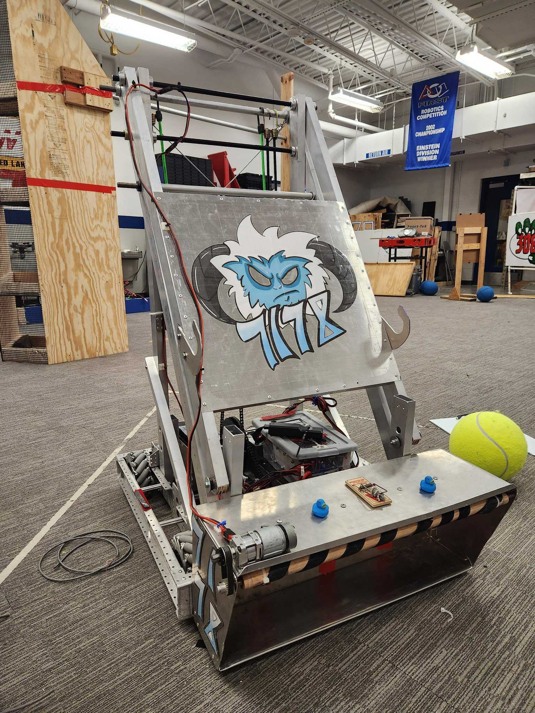


 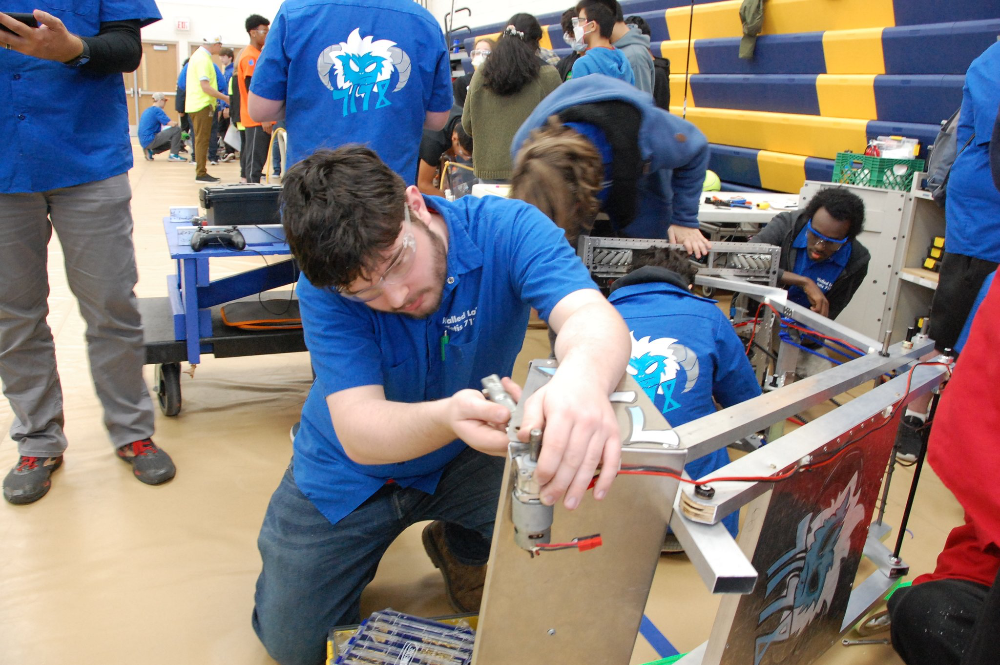
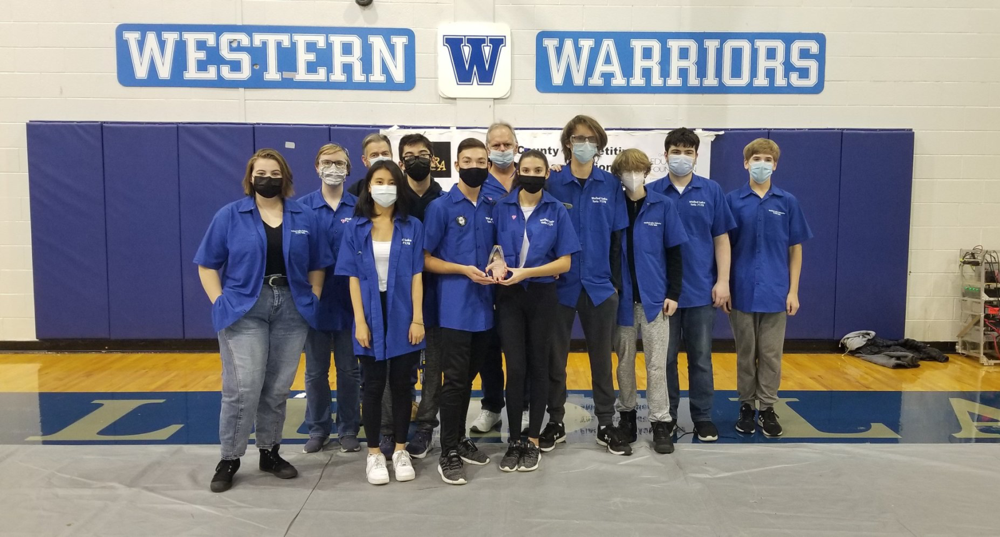
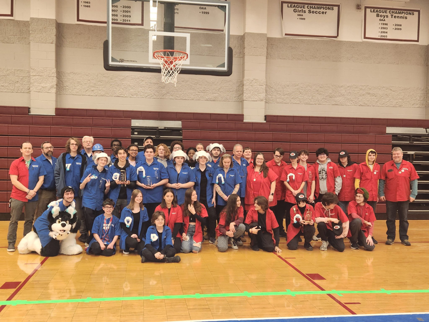
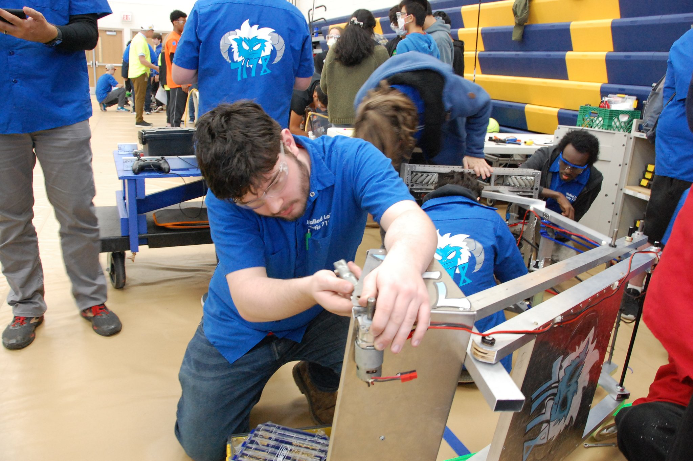
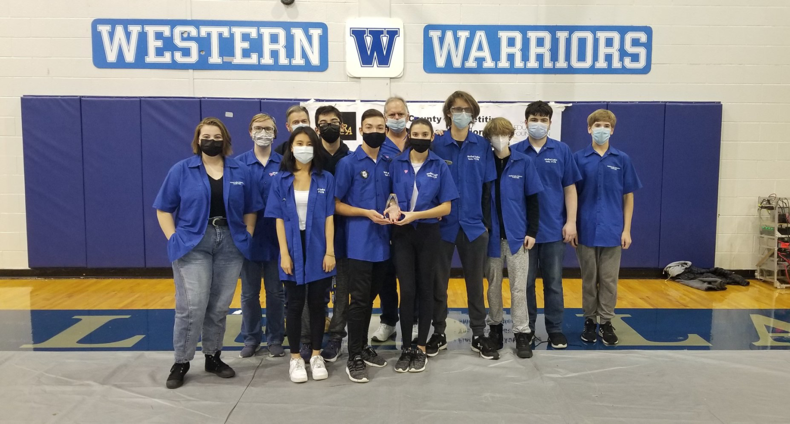
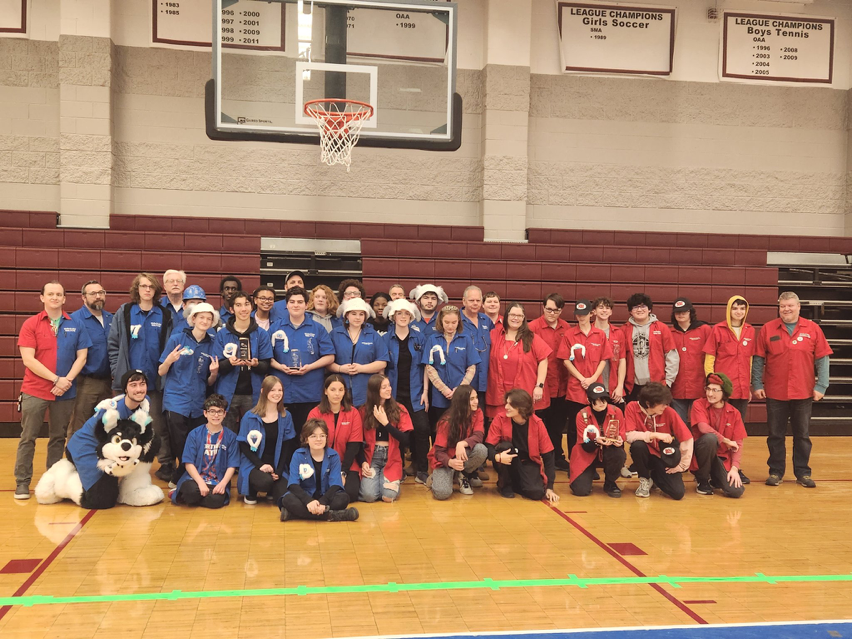
 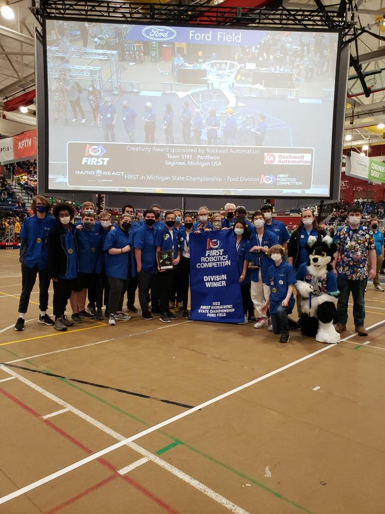
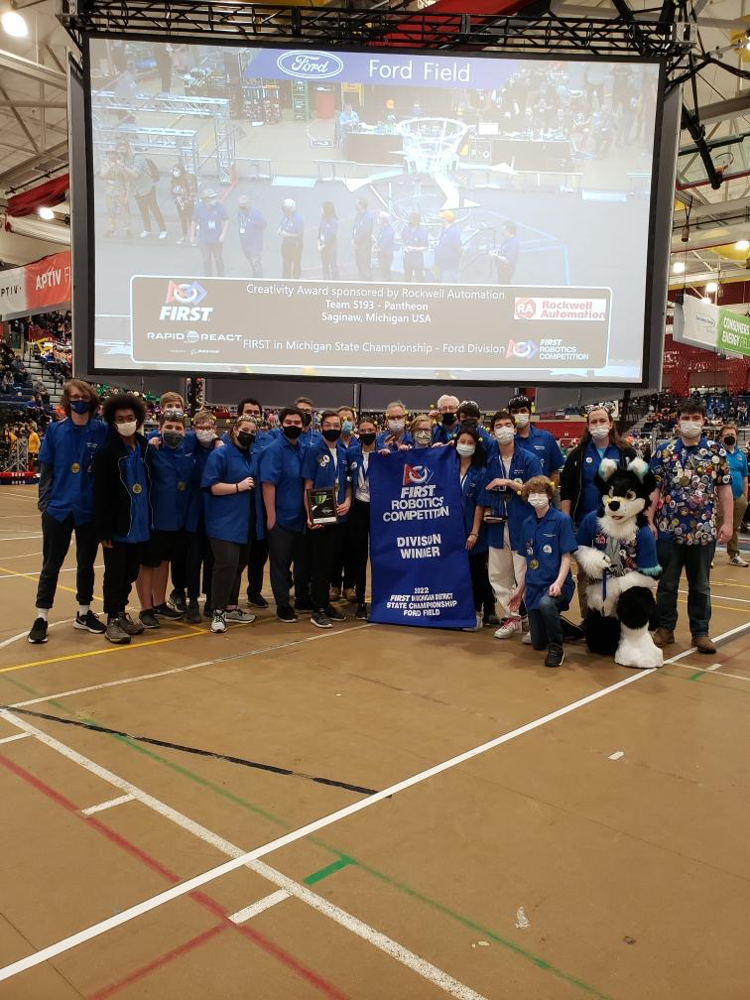

 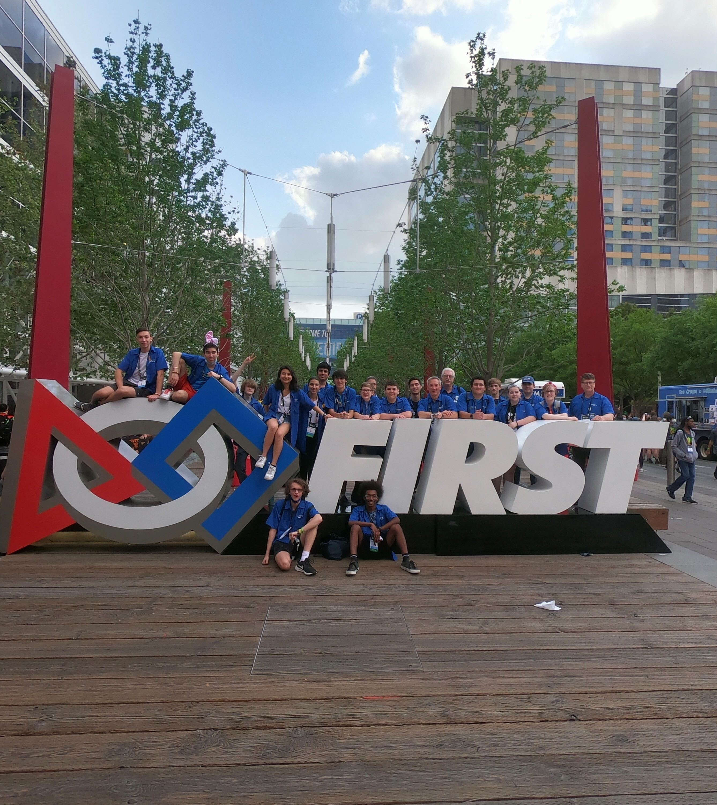
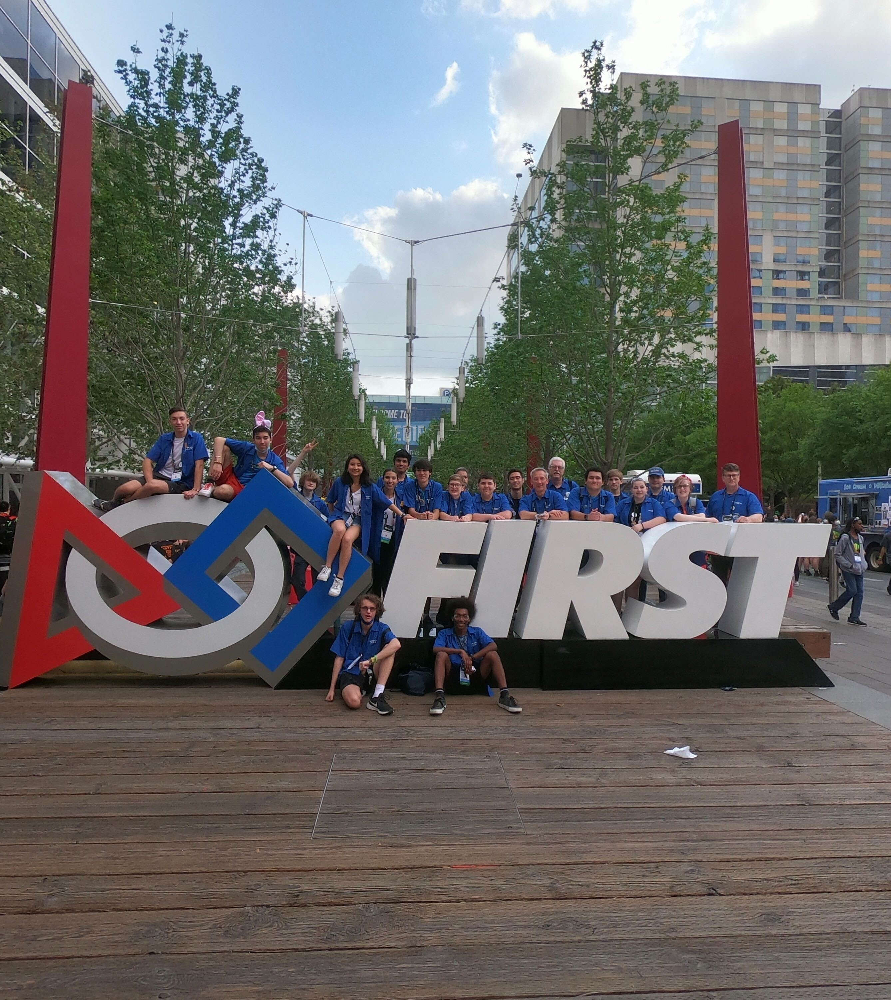